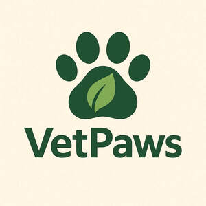

Trade Mark Journal No.2025/045 7 November 2025
UK00004283784 26 October 2025 (5,31)

- Class 5
- Dietary pet supplements in the form of pet treats; Dietary supplements for pets; Vitamin and mineral supplements for pets; Food supplements for veterinary use; Nutraceuticals for use as a dietary supplement; Feed supplements for veterinary use; Nutritional supplements for veterinary use; Dietary supplements for pets in the nature of a powdered drink mix; Dietary supplements for animals; Calcium tablets as a food supplement; Food supplements; Vitamins for pets; Dietary supplement drinks; Dietary food supplements; Mineral dietary supplements for animals; Vitamin supplements for animals; Nutritional supplements for livestock feed; Dietary supplements; Dietary supplement drink mixes; Dietary supplements for medical use; Mineral supplements for feeding livestock; Medicated supplements for animal feedstuffs; Antibiotic food supplements for animals; Homeopathic supplements; Bee pollen for use as a dietary food supplement; Nutritional supplements; Fodder supplements for veterinary purposes; Flaxseed dietary supplements; Medicated food supplements; Liquid dietary supplements; Anti-oxidant food supplements; Protein supplements for animals; Vitamin and mineral food supplements; Powdered nutritional supplement drink mix; Mineral dietary supplements; Attractants for pet animals; Propolis dietary supplements; Dietary and nutritional supplements; Probiotic supplements; Health food supplements made principally of vitamins; Dietary supplements in powder form; Herbal supplements; Food supplements for medical purposes; Food supplements in liquid form; Vitamin supplement patches; Ground flaxseed fiber for use as a dietary supplement; Vitamin preparations in the nature of food supplements; Vitamin supplements; Liquid nutritional supplements; Protein dietary supplements; Dietary supplements consisting of vitamins; Powdered nutritional supplement energy drink mix; Mineral nutritional supplements; Food supplements for non-medical purposes; Enzyme dietary supplements; Dietary supplements with a cosmetic effect; Calcium supplements; Dietary supplements for humans not for medical purposes; Colostrum supplements; Pollen dietary supplements; Zinc dietary supplements; Acai powder dietary supplements; Flaxseed oil dietary supplements; Chlorella dietary supplements; Linseed dietary supplements; Powdered fruit-flavored dietary supplement drink mix; Health food supplements made principally of minerals; Casein dietary supplements; Lecithin dietary supplements; Dog lotions for veterinary purposes; Nutritional supplement energy bars; Yeast dietary supplements; Dietary food supplements used for modified fasting; Albumin dietary supplements.
- Class 31
- Pet food; Food (Pet -); Pet foods; Pet food for dogs; Pet foods in the form of chews; Pet rabbit food; Pet foodstuffs; Pet animals; Pet beverages; Pet food for birds; Foodstuffs for pet animals; Pet birds; Dog food; Edible silvervine powder for pet cats; Dog foods; Edible pet treats; Cat food.
Songyi Wang